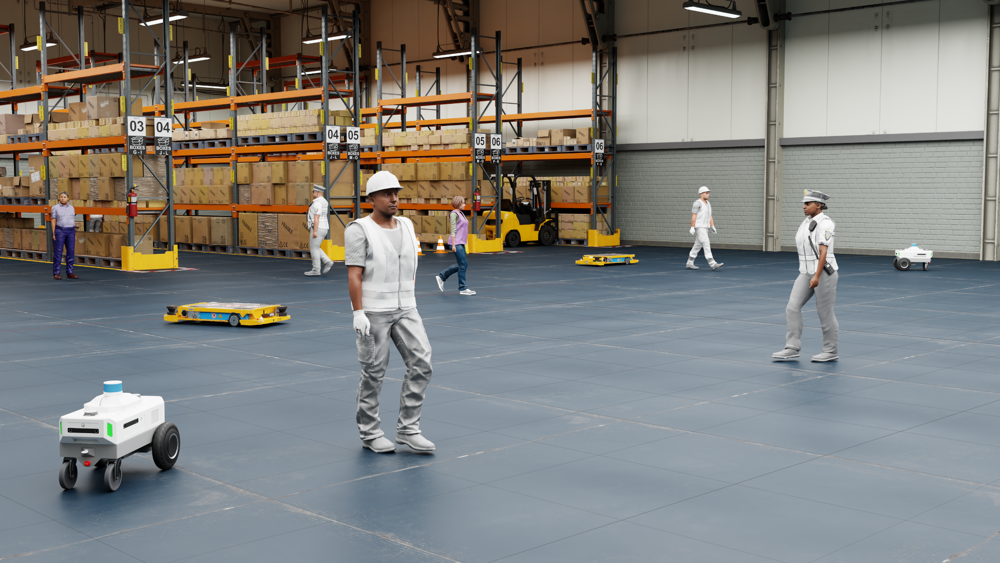
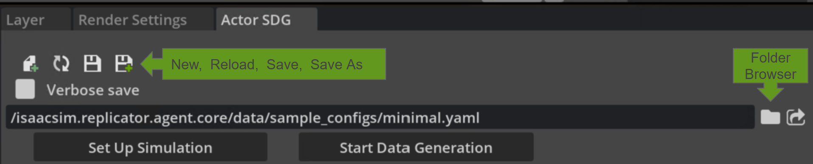
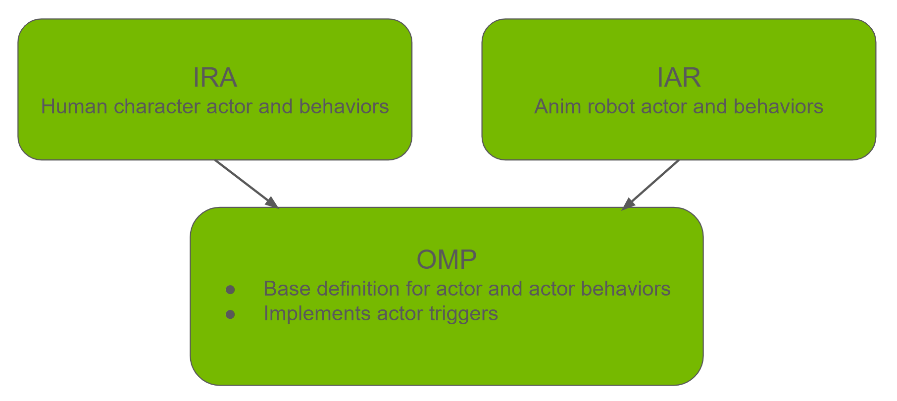
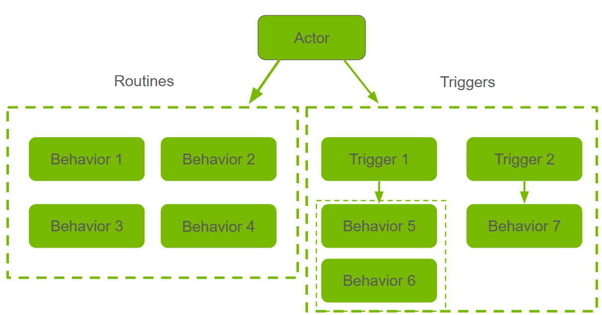
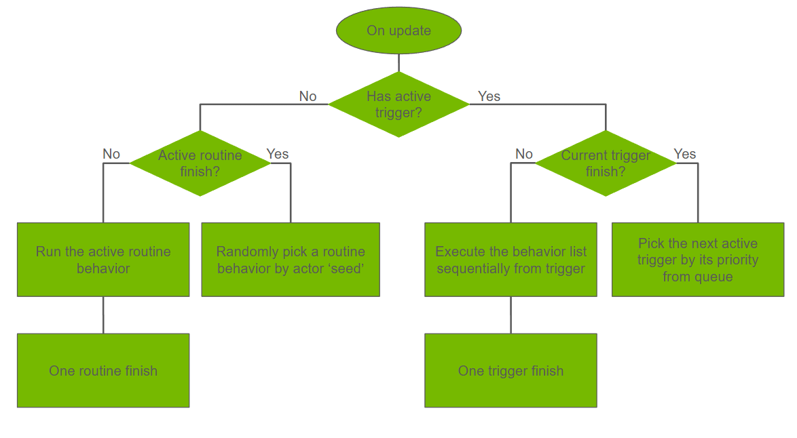

Actor Simulation and Synthetic Data Generation#
Detecting and tracking animated actors or agents like human characters and robots in diverse environments offers significant value across industries like retail, manufacturing, and logistics. It helps optimize layouts, improve safety, and enhance efficiency. However, collecting real-world data to train detection models is often costly and unscalable.
Synthetic data generation offers a flexible, scalable solution. The Omni.Metropolis.Pipeline (OMP), Isaacsim.Replicator.Agent (IRA), Isaacsim.Anim.Robot.Core (IAR) extensions together provide a way to set up human characters and robots in 3D environments and generate synthetic data.
This framework also provides control over actor behaviors, environments, and sensors, through a configuration file. It aims to provide a GPU-accelerated solution for training computer vision models and testing software-in-the-loop systems.
This framework simplifies simulation customization with features like:
Codeless Interaction: Configurations are expressed in a YAML file. No code is needed to get synthetic data.
Simplified Setup: Included in Isaac Sim, it offers both GUI and scripting interfaces for interactive and headless workflows.
High-Fidelity Data: Leverages Omniverse’s SimReady assets, physics, and rendering to produce realistic imagery and accurate annotations essential for AI training.
Seamless Integration: As part of Kit extensions, it works natively with
omni.anim.behavior,omni.anim.navigation, andomni.replicator.core.
Before enabling this extension, read What Is Isaac Sim? to learn about Isaac Sim and follow Installation to install Isaac Sim.
{kind=link}

Enable Extensions#
Follow the Omniverse Extension Manager guide to enable the
Omni.Metropolis.Pipeline,Isaacsim.Anim.Robot.Core, andIsaacsim.Replicator.Agent.Core & UI.The extensions fetch sample assets from Isaac Sim Assets during start. Refer to Isaac Sim Assets, if you encounter issues for loading assets.
If loading the UI appears to be hanging, try starting Isaac Sim with the flag
--/persistent/isaac/asset_root/timeout=1.0.
The UI panel is accessible by Tools > Action and Event Data Generation > Actor SDG and it opens on the right side of the screen.
Note
To have the extension auto-loaded on startup, check the autoload checkbox in the extension manager.
Because of extension dependencies, a restart of the Isaac Sim app might be required.
Tip
If you encounter unexpected errors, try launching Isaac Sim with the --reset-user flag to clear previous user settings.
./isaac-sim.sh --reset-user
Getting Started in the UI#
For first-time users, start with the UI. Refer to the Running from script section for running with a Python script in Isaac Sim headless mode.
Follow the Enable Extensions section and open the UI panel.
The minimal config is loaded by default. You can also load a separate config file using the folder browser icon.
All the sample config files are in
[Isaac Sim App Path]/extscache/isaacsim.replicator.agent.core-[current-version]/data/sample_configs/. For a description of each file, refer to Sample Configs.The minimal config file does not have actors or cameras. For a more comprehensive example, use
full_pipeline.yamlin the above folder. This example can take up more loading time.
{kind=link}

[Optional] Modify the configuration file to your needs.
Use the New icon to create a new config file.
Use the Reload icon to reset changes in UI and load the original config file again.
Use the Save or Save As icon to save the changes in UI to config file.
Use the Verbose save checkbox to control how much detail is written when saving your configuration file. When off, the written file is kept compact, only writing the values that are modified. When on, all non-empty fields are included, which is useful if you want a complete reference of every available option or need to share a fully explicit config with others.
Click the Set Up Simulation button from the top of the UI. It starts loading simulation assets (scene, cameras, actors) according to the configuration.
The scene requires a NavMesh to spawn assets and control them correctly. The scenes in the example config have NavMesh set up in advance. If you are using an external scene, refer to Navigation Mesh for NavMesh set up.
You can also go to Window > Navigation > NavMesh and turn off Auto-Bake in the NavMesh settings. Turning it off can increase the performance.
Note
Clicking Set Up Simulation always fully reloads the scene from the current configuration. This includes reopening the base environment USD and re-creating all actors (characters and robots), sensors, and prop layers from scratch. This action discards any manual edits made to the stage after a previous setup. If you want to iterate on the configuration, make your changes in the UI or config file first, then click Set Up Simulation to apply them.
Click the Start Data Generation button from the top of the UI. The simulation and data generation run for the duration (in seconds) specified in the Simulation Duration field in the Actor SDG Setup panel.
When data generation finishes, the output data is available in the Output Directory specified in the Replicator panel.
By default, it is
%USERPROFILE%\IRA_outputon Windows and~/IRA_outputon Linux.For the folder layout, expected filenames, and a checklist to confirm a successful run, refer to Expected Output.
Running from Script#
For large-scale data generation, launching from a script is more efficient. IRA provides an automatic script (actor_sdg.py) to run offline data generation.
To run from script, open a terminal from where Isaac Sim is installed and run the following commands:
- For Linux:
./python.sh tools/actor_sdg/actor_sdg.py -c [config file path]
- For Windows:
.\python.bat tools\actor_sdg\actor_sdg.py -c [config file path]
Note
[config file path]is the path to the IRA configuration file.You must use the
python.shorpython.batbundled with Isaac Sim to run the script.An example config file is also provided in the
/tools/actor_sdgfolder. For a sample Linux run, execute:./python.sh tools/actor_sdg/actor_sdg.py -c tools/actor_sdg/sample_config.yaml
Expected Output#
After data generation finishes, IRA writes the simulation output to the directory specified by output_dir in the replicator block of the configuration. If output_dir is not set, the default location is:
Linux:
~/IRA_outputWindows:
%USERPROFILE%\IRA_output
The exact layout depends on the writer that is active (refer to Writer Configuration for the full parameter list). With the default IRABasicWriter and the bundled full_pipeline.yaml sample config, you should expect a structure similar to the following:
<output_dir>/
├── <render_product_or_camera_subfolder>/
│ ├── rgb/ # one file per captured frame
│ │ ├── rgb_0030.png
│ │ ├── rgb_0031.png
│ │ └── ...
│ ├── camera_params/ # camera intrinsics and pose per frame
│ │ ├── camera_params_0030.json
│ │ └── ...
│ ├── object_detection.json # consolidated bounding boxes, skeleton data,
│ │ # and per-actor action data.
│ └── ... # one folder per additional annotator that
│ # was enabled (semantic_segmentation,
│ # instance_segmentation, distance_to_camera,
│ # normals, motion_vectors, ...)
└── ...
API Usage#
This extension also exposes a Python API that you can use to set up simulations and generate data from your own script.
Ensure that isaacsim.replicator.agent.core is enabled, and use the API as in the following example.
Note
The snippet below uses the minimal config bundled with the extension (data/sample_configs/minimal.yaml).
import os
from isaacsim import SimulationApp
# Start the application
simulation_app = SimulationApp({"headless": True})
# Get the utility to enable extensions
from isaacsim.core.utils.extensions import enable_extension
# Enable the IRA extension
enable_extension("isaacsim.replicator.agent.core")
simulation_app.update()
def _get_config_path() -> str:
"""Return path to the minimal IRA config bundled with the extension."""
import omni.kit.app
core_ext_path = (
omni.kit.app.get_app().get_extension_manager().get_extension_path_by_module("isaacsim.replicator.agent.core")
)
default_config_file_path = os.path.join(core_ext_path, "data", "sample_configs", "minimal.yaml")
if not os.path.isfile(default_config_file_path):
raise FileNotFoundError(f"IRA config not found: {default_config_file_path}")
return default_config_file_path
async def run_ira_data_generation(setup_simulation: bool = False, run_data_generation: bool = False):
from isaacsim.replicator.agent.core import api as IRA
# IRA: load config. Specify the config file path.
config_path = _get_config_path()
result = IRA.load_config_file(config_path)
if not result:
raise RuntimeError(f"Failed to load IRA config: {config_path}")
# IRA: get config, you can modify the config here
config = IRA.get_config_file()
IRA.set_config(config)
# IRA: setup simulation (only when setup_simulation is True)
if setup_simulation:
await IRA.setup_simulation()
# Allow a few frames for scene to settle
import omni.kit.app
app = omni.kit.app.get_app()
for _ in range(10):
await app.next_update_async()
# IRA: generate data (only when run_data_generation is True)
if run_data_generation:
await IRA.start_data_generation_async(will_wait_until_complete=True)
from omni.kit.async_engine import run_coroutine
task = run_coroutine(run_ira_data_generation(setup_simulation=False, run_data_generation=False))
while not task.done():
simulation_app.update()
Configuration File#
The configuration file is the central place to define your simulation. It controls everything from the environment and characters to the sensors and data output. The file uses the YAML format.
The configuration file is organized into these top-level sections:
environment: Defines the simulation environment and assets.character: Configures human characters.robot: Configures robots.sensor: Configures RTX sensors.replicator: Configures data generation and output.
For detailed configuration instructions, parameter lists, and examples, refer to the following document:
Sample Configs#
The extension bundles a small set of ready-to-run YAML configs under
[ext-path]/data/sample_configs/ so you can review each major feature in
isolation before composing your own. The samples cover both character-behavior
APIs side by side:
the stable routine-trigger system at the top level
the experimental behavior-tree system under
behavior_tree/
If you are starting out, open minimal.yaml (the UI loads it on launch) to
review the smallest valid config, then switch to full_pipeline.yaml
for an end-to-end demo with sensor placement and writers.
Migrating from IRA 0.x.x#
If you are upgrading from IRA 0.x.x (shipped with Isaac Sim 5.1 and earlier), be aware that IRA 1.x.x (Isaac Sim 6.0+) is a complete architectural redesign. All core capabilities, such as the following, are carried forward:
environment loading
character and robot spawning
sensor placement
synthetic data generation
However, the configuration schema, behavior system, and Python API have all changed. Existing 0.x config files and scripts will not work without modification.
Key reasons for the redesign:
Simpler workflow – The multi-step process of generating, saving, and loading external command files is gone. Behaviors are now defined inline in the YAML config, reducing setup to two clicks in the UI.
Greater flexibility – Named groups let you define multiple character, robot, and sensor populations with independent settings in a single config. Multiple data writers can run concurrently with per-writer timing and sensor selection.
Stronger validation – Pydantic v2 models validate configs on load and surface clear error messages, catching mistakes before the simulation starts.
USD-native architecture – Actor configurations are persisted as USD schemas and prims, making them inspectable and editable directly in the stage.
For the full migration guide covering every breaking change with before/after examples and a step-by-step checklist, refer to Replicator Agent (IRA).
For editing the configuration files through UI or code, refer to the Configuration Editor API:
For a practical walkthrough of using the CustomWriter to stream RTSP video from IRA cameras, review the following example:
Actor Behaviors#
Actor behaviors are achieved by OMP, IRA, and IAR together.
{kind=link}

Actors perform a “routine-trigger” behavior loop at play. This pattern is configurable by the behaviors and triggers assigned to the actor.
{kind=link}

The Routine Trigger Loop#
When no actor triggers are activated, actors perform a routine loop by repeatedly picking behaviors from routines to perform, weighted by their probability, using the actor global seed.
When any trigger activates, the actor pauses its routine and performs the behaviors under each active trigger. The system pauses and queues running triggers if a higher-priority trigger fires (lower-priority triggers are skipped). A trigger is marked complete when all its behaviors finish. The first trigger in the queue then resumes. After all active triggers complete, the actor returns to its routine.
{kind=link}

Configure Behaviors#
After the actors are loaded into the scene from the config file, the configurations are embedded in the USD API schemas and USD Prims. Each actor is represented by a MetroAgentAPI schema and its derived type.
For a human character, it is the IRACharacterAPI attached on the SkelRoot prim. For an animated robot, it is the AnimRobotAPI attached on the root prim of the robot payload.
Each behavior and trigger becomes an individual USD Prim that the actor USD API can have reference to, each actor trigger prim can also have reference to a list of behaviors.
The actor USD API schema defines basic information of the actor:
name
group
seed
a routine reference slot and a trigger reference slot
At play, the name, group, and seed will be combined and hashed into a single seed as actor global seed. This seed will be used for all the “randomness” of the actor, including random routine picking for the actor itself and the picking within each behavior such as picking a speed from speed range.
This also means the same actor global seed displays the same result if other settings and the environment do not change.
Each type of actor behavior is represented by a USD Prim type. It defines the configuration of the behavior:
weight
repeat
behavior
For human characters, the behavior prim types follow the CharacterXXXBehavior naming pattern. For animated robots, they are RobotXXXBehavior.
Each actor trigger is also a USD Prim. It defines the trigger priority and has a reference to a behavior list to be executed sequentially when this trigger activates.
Human characters and anim robots share the same trigger types that are defined in OMP with the MetroXXXTrigger naming pattern.
In addition, the actors leverage omni.behavior.behavior (Human characters) and isaacsim.anim.robot.core (Animated robots) as their animation implementation.
For more information about them, refer to the following documents:
Behavior Tree (Experimental)#
Warning
Behavior tree character support is experimental and might change in future releases.
In addition to the routine-trigger behavior system described above, IRA 1.3.0 introduces support for driving character behavior through behavior trees. Behavior trees are authored with the omni.behavior.tree.core and omni.anim.behavior.tree extensions.
Behavior Tree Overview
A behavior tree is a hierarchical model for decision-making. It is composed of different node types that work together:
Action nodes are the leaf-level nodes where characters perform concrete actions (for example,
MoveTo,Wait).Composite nodes control logic and execution flow. For example, a
Sequencenode runs its children in order, while aSelectornode tries children until one succeeds.Modifiers and Decorators wrap other nodes to alter their behavior, such as
Repeat(loop a subtree) orRandomNavMeshPoint(supply a random destination).
By combining these node types, you can compose arbitrarily complex behaviors. Behaviors from simple wander loops to multi-step conditional sequences, that are all within a single tree definition, without writing code. Compared to the IRA routine system, which picks behaviors randomly by weight, a behavior tree gives full deterministic control over ordering, branching, and looping.
Relationship to Routines and Triggers
Note
Triggers are not currently supported for behavior-tree character groups. Any reactive or conditional logic must be authored as nodes inside the behavior tree itself.
Behavior tree mode is an alternative to the routine-trigger system. Each character group in the configuration uses one or the other: a group either defines routines and triggers (IRA-style) or references a behavior_tree. However, a single configuration file can contain multiple groups, so IRA-style and behavior-tree groups can coexist side by side.
Workflow
Author a behavior tree using
omni.behavior.tree.uiand save it as a JSON file. The tree references node librariesomni.behavior.tree.coreandomni.anim.behavior.treefor its action, composite, and modifier nodes. Refer to the Behavior Tree’s User Guide for how to author a behavior tree.In the IRA configuration YAML, create a character group with a
behavior_treefield pointing to the JSON file. Optionally provide anoverridesfield to assign node parameters for different character groups without modifying the tree file.Warning
The
overridesfield is not currently configurable through the UI. It can only be edited directly in the YAML configuration file or API.Run the simulation as usual. The behavior-tree characters share the same spawning, NavMesh, and data-generation pipeline as IRA characters.
Some sample config files with behavior tree character groups are provided in the [Isaac Sim Assets Path]/Samples/BehaviorTree folder as well as bundled in the data/sample_configs/behavior_tree/ folder in the isaacsim.replicator.agent.core extension (refer to Sample Configs). For configuration details, parameter reference, and YAML examples, refer to Behavior Tree Character Group (Experimental) in the Configuration File Guide.
Warning
Behavior tree characters set up by IRA still have the IRACharacterAPI schema applied, but this is only used for data-generation identification (name, group, semantic labels, and related fields). The character’s behavior is entirely controlled by the behavior tree through omni.behavior.tree.core (OBT). IRA-level settings such as seed have no effect on behavior-tree characters.
Terminology#
Isaacsim.Replicator.Agent.Core
The core extension that manages the simulation state. It contains the essential API and modules for setting up the simulation and capturing the synthetic data. Its modules can be called independently.
Isaacsim.Replicator.Agent.UI
The UI extension for IRA. When this extension loads, the core extension is loaded automatically. This extension contains the UI components for easy interaction with the extension.
Configuration File
A .yaml file that contains configuration data that defines the key components of a simulation, including the randomization seed, duration of the simulation, number of the actors, and output format. To use the extension, you must load a configuration file or use the UI to generate a YAML file first.
Actor
Actors are controlled by the respective controllers (omni.behavior.tree and isaacsim.anim.robot) and perform actions in the simulation. The extension supports human characters and robots (Nova Carter, iw.hub) as actors. The terms “actor” and “agent” are used interchangeably in this documentation.
Seed
Randomization seed. Given the same seed, the extension can generate the same randomized result for camera and agent location and agent behaviors. With the same seed and the same sequence of operations, the same data is guaranteed to be generated.
Replicator (Omni.Replicator.Core)
The data capturing extension that this extension is based on. More information about the Replicator extension can be found in Replicator Official Documentation.
Behavior Tree
A hierarchical data model for organizing decision-making and actions. A behavior tree is defined as a JSON file and referenced from the IRA configuration. It provides an alternative to the routine-trigger system for controlling character behavior. Refer to the Behavior Tree documentation for more information.